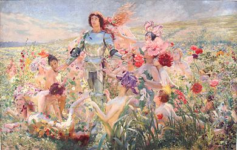

1 Bojo mi bojo [*]
Boya, ma chère âme
Prva Rukovet - Première Guirlande: (1,0 - 30,0)

Femmes-objets selon Georges-Antoine Rochegrosse:
Parsifal et les filles-fleurs (1894)
|
|
NOTES
|
[*] УпÑаво на Ð¾Ð²Ð¾Ñ Ð¿ÐµÑми оÑваÑаjy Ñе пÑвa ÑÑÐºÐ¾Ð²ÐµÑ Ð¸ ÐокÑаÑÑевa збиÑкa. ЦиÑиÑа Ñе Ñамо Ñедна ÑÑÑоÑа, али два пÑÑа: пÑе и поÑле пÑве ÑÑÑоÑе ÑледеÑе пеÑме. Ðва понавÑаÑа имаÑÑ Ð·Ð° ÑÐ¸Ñ Ð´Ð° ÑÑвоÑе не Ñамо мелодиÑÑко ÑединÑÑво ÑапÑодиÑе, по ÑзоÑÑ Ð½Ð° ÐоÑипa ÐаÑÐ¸Ð½ÐºÐ¾Ð²Ð¸Ñ Ñ ÑвоÑÐ¾Ñ Ð·Ð±Ð¸ÑÑи âÐолоâ, Ð²ÐµÑ Ð¸ Ñено ÑемаÑÑко ÑединÑÑво евоÑиÑаÑем ÐÐÐÐÐÐÐÐСТРÐÐÐРод пÑвог дана Ñеног бÑака. Ðвде Ñе Ñимбол овог мÑÑког пÑимаÑа неÑÑмÑиво ÑÐµÑ Ð·Ð° коÑи, као киÑÑ, мÑж окаÑи женÑ. Ðва ÑÑÑÑка капа за Ð³Ð»Ð°Ð²Ñ ÑказÑÑе на поÑекло овог дÑÑвеног поÑеÑка. Ðва пеÑма као да Ñе неÑÑала Ñа ÑепеÑÑоаÑа певаÑа. [**] Тек 1827. године, под владавином ÑÑлÑана ÐÐ°Ñ Ð¼Ñда II (1808-1839), ФÐС Ñе поÑÑао капа оÑманÑке воÑÑке, а заÑим 1829. ÑÐ²Ð¸Ñ ÑÐ¸Ð²Ð¸Ð»Ð½Ð¸Ñ Ð¸ веÑÑÐºÐ¸Ñ Ð´Ð¾ÑÑоÑанÑÑвеника коÑи ÑÑ Ñ Ð¾ÑÑалом ÑÑвоÑили евÑопÑÐºÑ Ð¾Ð´ÐµÑÑ. Ðаменио Ñе ÑÑÑбан и, на кÑаÑÑ, имао за ÑÐ¸Ñ Ñ Ð¾Ð¼Ð¾Ð³ÐµÐ½Ð¸Ð·Ð°ÑиÑÑ ÑазлиÑиÑÐ¸Ñ Ð¿Ð¾Ð¿ÑлаÑиÑа ÐÑманÑког ÑаÑÑÑва. ÐÑÑÑаÑа Ðемал, ÑвоÑÐ°Ñ Ð¼Ð¾Ð´ÐµÑне и ÑекÑлаÑне ТÑÑÑке, забÑанио Ñе Ñо законом 25. новембÑа 1925. ÐеÑма моÑалa Ñе дакле биÑи ÑаÑÑавÑенa измеÑÑ 1829. и 1925. године. |
[*] C'est sur ce chant que s'ouvre la première guirlande du recueil de Mokranjac. Une seule strophe en est citée, mais deux fois: avant et après la première strophe du chant suivant. Ces répétitions visent à créer non seulement l'unité mélodique de la rhapsodie, sur le modèle créé par Josip MarinkoviÄ dans son recueil "Kolo", mais aussi son unité thématique en évoquant l'ASSUJETTISSEMENT DE LA FEMME dès son mariage. Ici le symbole de cette primauté masculine est sans aucun doute le fez auquel l'homme accroche une femme comme un ornement. Cette coiffe turque indique l'origine de cet ordre social. Ce chant semble avoir disparu du répertoire des chanteurs. [**] Ce n'est qu'en 1827, sous le règne du Sultan Mahmoud II (1808-1839) que le FEZ devint le couvre-chef de l'armée ottomane, puis, en 1829, de tous les dignitaires civils et religieux qui avaient par ailleurs adopté les vêtements européens. Il remplaçait le turban et, en dernier lieu, visait à l'homogénéisation des différentes populations de l'Empire ottoman. Mustafa Kemal, créateur de la Turquie moderne et laïque, l'interdit par une loi du 25 novembre 1925. La chanson est donc née entre 1829 et 1925. |

Dr. Himzo Polovina (1927-1986), grand collecteur
et interprête de chants anciens de Bosnie
1 Rukovet